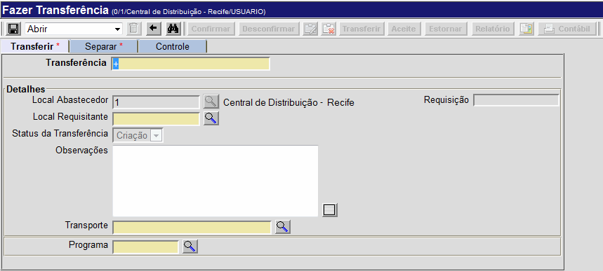

Transferência Direta [ Voltar ]
Utilize
este formulário para fazer transferências diretas e consultar transferências existentes. Para acessar
a tela, vá ao menu "Transferência" e clique em "Transferência Direta".
Ao clicar no nome do
formulário, o sistema abrirá a seguinte tela:

Este
manual contém os passos para exibe o passo-a-passo para as seguintes
funcionalidades:
- Fazer transferência direta
- Estorno de transferência
Fazer transferência direta
1º
Passo: informe os dados principais da transferência.
- Transferência. Este
campo apresenta por padrão um sinal de mais "+". Desta forma, assim que
o registro é salvo, é-lhe atribuído o próximo número de transferência
disponível. Não é necessário preencher este campo;
- Local Abastecedor. Este campo exibe o local de onde os produtos da transferência sairão;
- Local Requisitante. Informe aqui o código do local para onde os produtos serão transferidos. Clique botão
 [Procurar] para selecioná-lo a partir de uma
listagem de locais cadastrados;
[Procurar] para selecioná-lo a partir de uma
listagem de locais cadastrados; - Status da Transferência.
O Sistema exibe aqui o status de momento da transferência em questão. A
transferência passa por quatro estágios, que são: Criação, Confirmada, Enviada e Recebida; e
- Observações. Deposite neste campo informações adicionais sobre a transferência.
- Transporte. Este campo é preenchido automáticamente pelo sistema quando o usuário seleciona o local requisitante.
- Programa. Se os produtos a ser transferidos estão associados a um dos programas existentes (por exemplo, Tuberculose, Ação Judicial, etc.), selecione-o neste campo, clicando no botão [Procurar] para selecioná-lo a partir de uma lista dos programas cadastrados no sistema.
2° Passo: clique no botão  para salvar os dados principais da transferência. Assim que o registro é salvo, uma grade para inclusão dos produtos da transferência será exibida na parte inferior da tela. para salvar os dados principais da transferência. Assim que o registro é salvo, uma grade para inclusão dos produtos da transferência será exibida na parte inferior da tela.
3º Passo: especifique na grade os produtos e quantidades da transferência. Clique no botão
[Procurar] do campo "Produto" para selecioná-lo a partir de uma
listagem de produtos cadastrados. Após informar o produto, pressione a
tecla "Tab" ou clique fora do campo para que o produto seja carregado.
No campo "Quant. Pendente", informe a quantidade para a ser transferida. Pressione a tela "Enter" ou "Tab" para ir de um campo a outro. Você
pode também utilizar os botões da grade para adicionar ou excluir
linhas, pesquisar itens da grade e exportar os dados da grade para uma
planilha Excel.
Observação: caso alguns do produtos da transferência não tiverem estoque suficiente para a transferência, o campo "Quant. Pendente" será exibido em
vermelho. Neste caso, verifique a quantidade disponível em estoque no campo "Estoque" (ver imagem abaixo) e ajuste a quantidade conforme o estoque disponível.
4º Passo: clique no botão para salvar produtos e quantidades. Assim que a transferência é salva, o botão  estará habilitado. estará habilitado. 5°
Passo: confira os dados da transferência e clique no botão . Após a confirmação da transferência, o botão
estará habilitado caso algum dado dos produtos deva ser revisado.
Lembre-se que, uma vez desconfirmada a transferência, ela deverá ser
confirmada novamente. 6° Passo: clique no botão  para
visualizar e imprimir a lista de separação. Após
a confirmação da transferência, a
próxima etapa é a impressão da lista de separação. Ao clicar no botão , a tela "Filtros de Relatório" será exibida para
que o usuário indique a forma de ordenamento da lista. para
visualizar e imprimir a lista de separação. Após
a confirmação da transferência, a
próxima etapa é a impressão da lista de separação. Ao clicar no botão , a tela "Filtros de Relatório" será exibida para
que o usuário indique a forma de ordenamento da lista.
Passos para o ordenamento dos produtos da lista de separação: - Marque a opção "Ordenar por grupo" se desejar que o conteúdo da lista de transferência de materiais seja organizada por grupos;
- O ordenamento dos produtos da transferência pode se dar por: N°. da sequência (como preenchido na transferência, por Código do produto ou peça Descrição do produto. Marque a opção desejada;
- Após marcar as opções desejadas, clique no botão
 [OK] para processar o relatório. [OK] para processar o relatório.
Para imprimir o relatório, clique no botão  [Imprimir] do navegador. [Imprimir] do navegador. Após imprimir a lista
de separação, clique no botão  para voltar à tela
principal da transferência. para voltar à tela
principal da transferência. Assim que a lista de separação é impressa, o botão  [Cancelar Lista de Separação] estará habilitado para cancelamento da
separação. Lembre-se que uma vez cancelada, a lista de separação deverá
ser impressa novamente.
[Cancelar Lista de Separação] estará habilitado para cancelamento da
separação. Lembre-se que uma vez cancelada, a lista de separação deverá
ser impressa novamente. 7° Passo: informe os dados da separação na aba "Separar". No campo "Quant. Transferida", informe a quantidade separada para transferência. 
Para
informar um lote diferente do lote sugerido pelo sistema, basta
selecionar com um clique a linha do produto desejado e observar que
todos os endereços e lotes disponíveis são exibidos na parte inferior
da tela (veja imagem abaixo). Em seguida, clique no endereço/lote
desejado. 
8° Passo: clique no botão para salvar as informações de quantidade e endereços. 9° Passo: em seguida,
clique no botão para
processar a transferência. O status da
transferência será alterado para "2 - Enviada".
Estorno
de transferência
Você
pode decidir desfazer uma transferência já enviada.
Lembre-se que só é possível estornar uma transferência caso o status da mesma seja Enviada e
haja
estoque o suficiente no local para os produtos do estorno. Além disso,
a ação de estorno só pode ser realizada a partir do local de envio.
1° Passo:
após abrir o registro de transferência na tela "Fazer Transferência",
clique no botão  . Na imagem abaixo, observe
que o status desta transferência é "2 - Enviada" e o
campo "Quant. Estornada"
da grade é igual a zero. Isto quer dizer
que este registro possui um ou mais produtos passíveis
de estorno. . Na imagem abaixo, observe
que o status desta transferência é "2 - Enviada" e o
campo "Quant. Estornada"
da grade é igual a zero. Isto quer dizer
que este registro possui um ou mais produtos passíveis
de estorno.
Após clicar no botão , a tela "Estorno de transferência"
será aberta para a transferência em questão. Ela carregará os dados dos
produtos contidos na transferência que ainda não foram estornados.
2° Passo: informe
na grade os produtos e quantidades para o estorno. Informe na coluna "Quant. Estorno" as quantidades para o estorno dos produtos. Para estornar a quantidade total do produto transferido, marque o campo "Estornar quantidade total". Se
desejar estornar a quantidade total transferida de todos os produtos, clique no botão .
Da mesma forma, utilize o botão  para as marcações da coluna "Estornar quantidade total". para as marcações da coluna "Estornar quantidade total".
3° Passo: após
especificar produtos e quantidades, clique no botão para salvar as informações.
4° Passo: clique no botão  para
concluir o estorno. para
concluir o estorno.
|